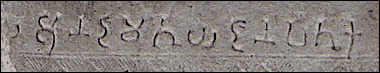

InscriptionAt the top of this pillar is a short inscription. The inscription relates to a donation made to the Stupa. Donations were made by local people to support the Stupa and the monastery at Amaravati. The names of donors often appeared on individual blocks of sculpture. In some cases, donors were shown in the reliefs as worshippers. |